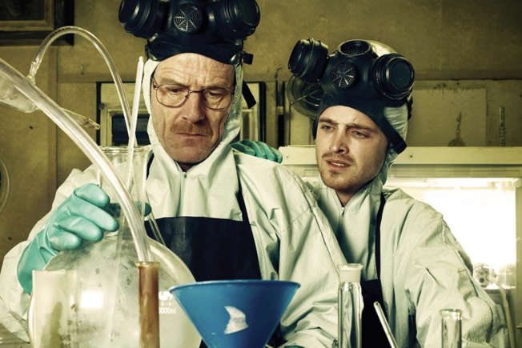
A série foi elogiada por sua precisão científica, especialmente em relação à química. Gilligan e
sua
equipe consultaram químicos reais para garantir que os processos de fabricação de drogas fossem
retratados com precisão. Além disso, os nomes dos episódios muitas vezes fazem referência a
conceitos científicos.
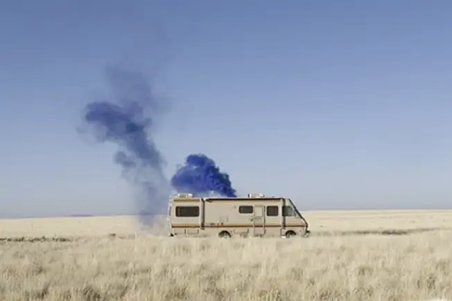
Durante as filmagens, a substância utilizada para simular a cena era açúcar em pedra.
Curiosamente, esse
açúcar poderia ser aproveitado depois para adoçar o café.
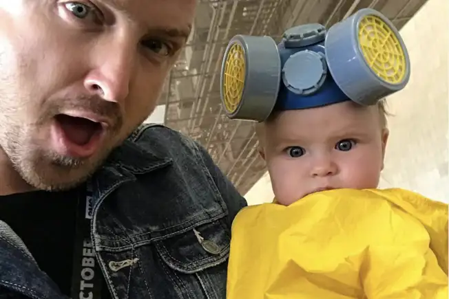
Jesse Pinkman ia morrer no nono episódio, mas a greve dos roteiristas, em 2007, interrompeu as
filmagens,
que resultou numa primeira temporada de apenas sete episódios. Foi tempo suficiente para
perceber o
verdadeiro potencial do personagem.
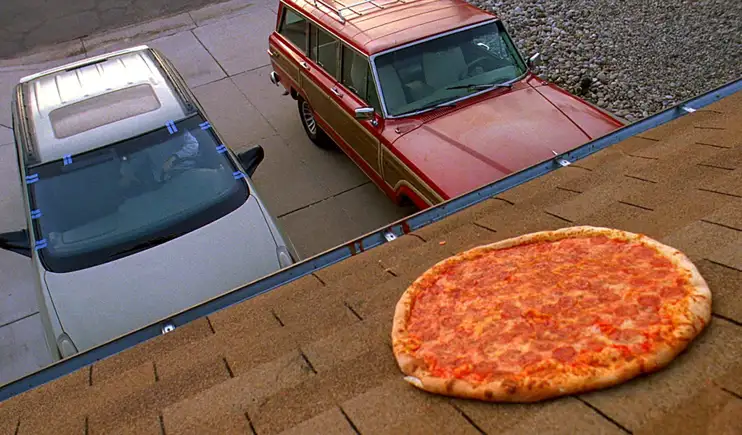
A mítica cena em que Walter joga uma pizza no telhado foi gravada no primeiro take. Aliás, muitos
fãs
foram até a casa para repetir o famoso arremesso. Certamente, nem todos tiveram a mesma destreza
de
Cranston!
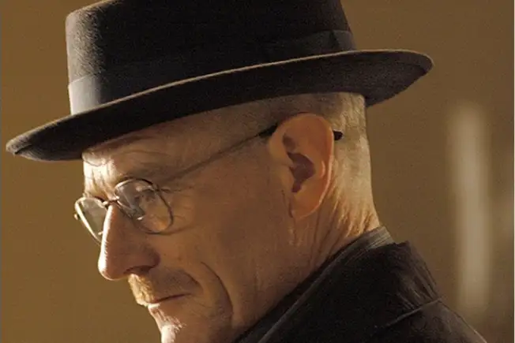
É difícil imaginar Heisenberg sem seu característico chapéu preto. Mas a verdade é que o
acessório não
estava previsto no roteiro. Cranston o usou apenas para proteger sua cabeça raspada. Quando
Vince
Gilligan viu aquilo, não hesitou.
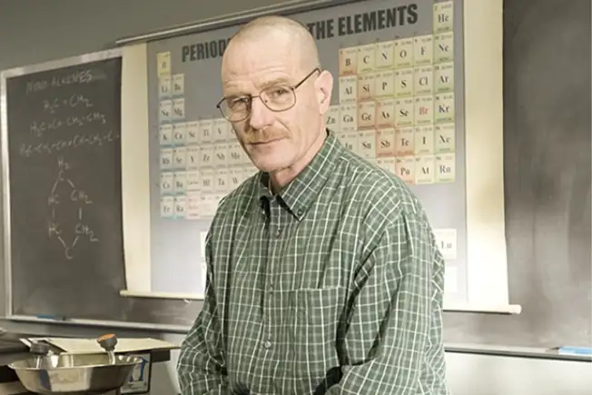
Curiosamente, o último capítulo da série não se chama Samário, mas FeLiNa: Fe (Ferro), Li (Lítio)
e Na
(Sódio), elementos presentes no sangue, na fabricação da metanfetamina e nas lágrimas.
Basicamente, o
último capítulo pode ser traduzido como sangue, meta e lágrimas. Incrível.
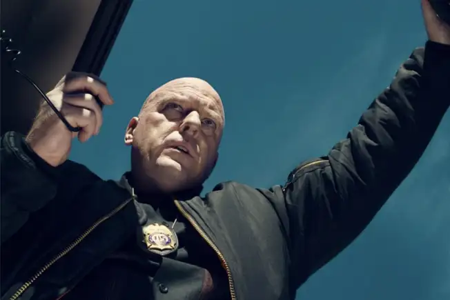
Lembra-se das coordenadas onde Walter White enterrou o dinheiro? Eram +34º 59' 20.00'' -106º 36'
52.00:
justamente o estacionamento dos Albuquerque Studios!
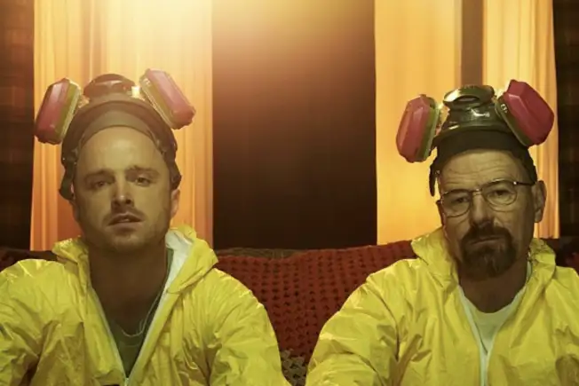
Em uma cena de luta com Tuco Salamanca, o ator por trás do personagem, Raymond Cruz, acertou, sem
querer,
Aaron Paul, que caiu inconsciente no chão. Felizmente, tudo não passou de um susto.
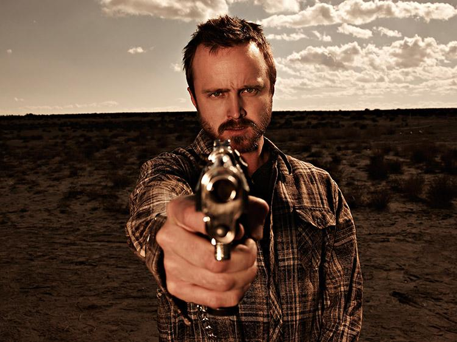
A casa de Jesse foi vendida no período em que a 2ª temporada era gravada. Todas as cenas internas
na casa de Jesse da 3ª temporada em diante foram, na verdade, gravadas em um set construído para
ser um pouquinho maior do que o local verdadeiro.
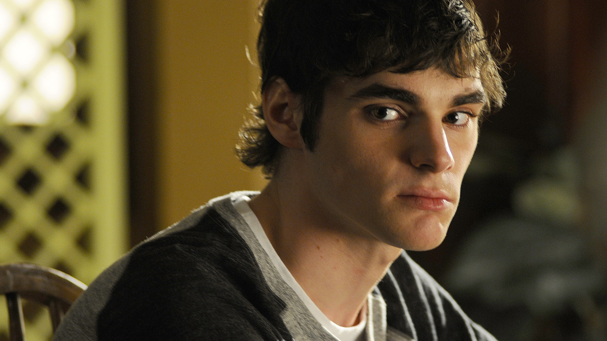
Assim como o personagem, o ator R.J. Mitte tem paralisia cerebral na vida real. Mitte sofre de
paralisia cerebral moderada e teve que aprender a andar de muletas e a melhorar sua dicção para
conseguir o papel de Walter Jr.
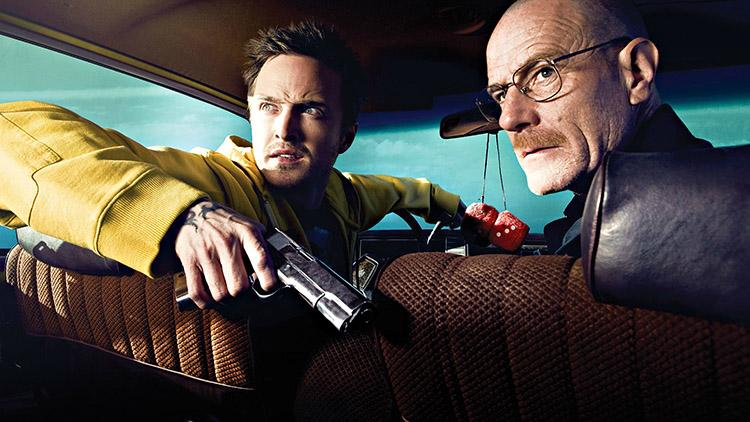
Cada episódio custou 3 milhões de dólares.O que faz cada temporada de 13 episódios valer quase 40
milhões.